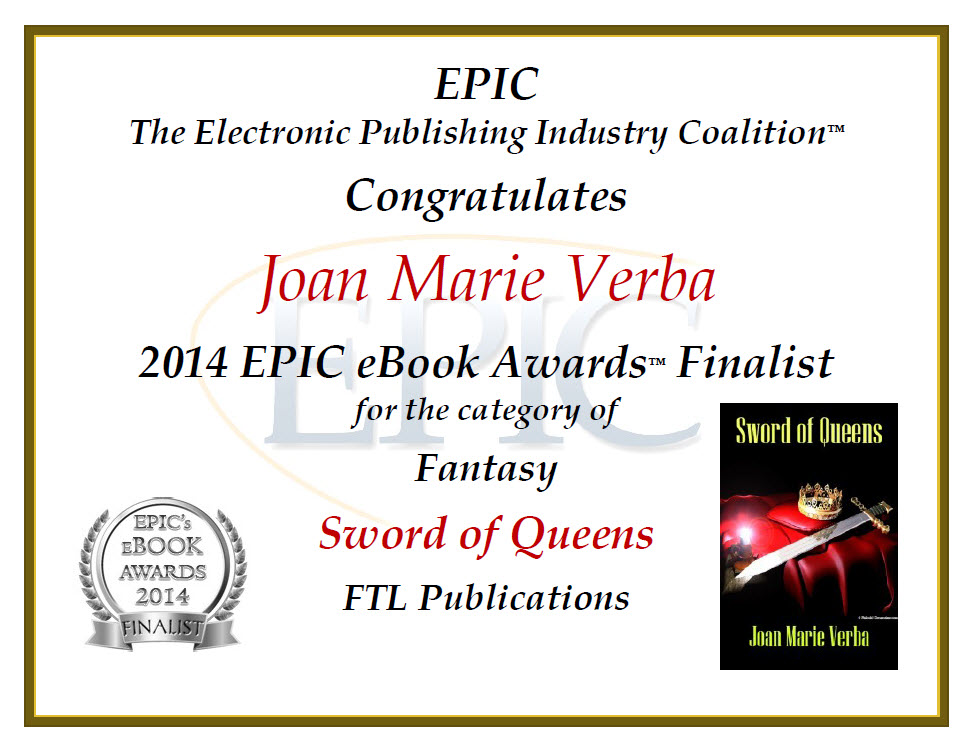
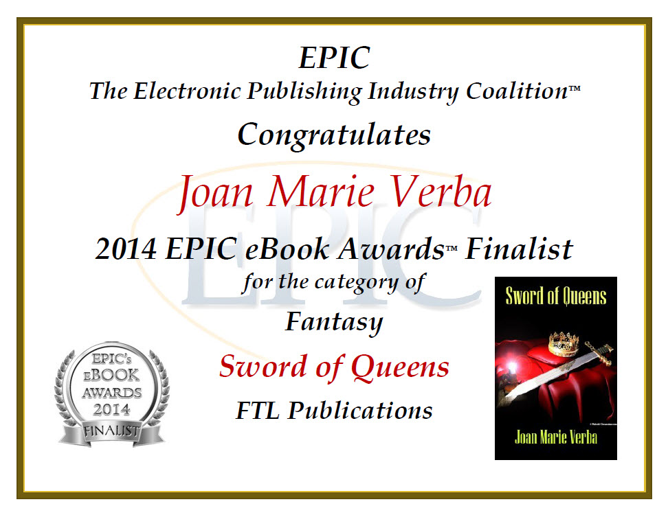

It sounded like such a straightforward quest when Oberon proposed it—just gather up the magical talismans the fairies had
given her family and give them back, now that King Charlemagne's war with Spain was over. But when Bradamant took on the
quest, she didn't know that her brother would think it was trafficking with devils. Her cousins the magicians didn't want
to give up their carefully indexed books of magic (much less the hippogriff—a useful steed and a loyal companion). Her
sister-in-law was willing to give up the spear of Galafrone, but not until she'd finished using it. And her cousin Roland
seemed to be haunting his grave, where his magically enduring sword was buried with him, and dead set against being disturbed.
What's a warrior to do when valiance alone is not enough for her to complete a quest?
Midwest Book Review
"Bradamant's Quest" is a youthful fantasy from Ruth Berman who presents a story of Bradamant, who is charged in recovering
her family's magical talismans after Charlemagne's wars are over. But faced with the forces of magic . . . Bradamant's task
is anything but easily done. "Bradamant's Quest" is an excellent pick that shouldn't be overlooked.
Phyllis Ann Karr, author of Frostflower and Thorn, The Idylls of the Queen, and Amberleaf Fair
Prose by a poet. I look forward to rereading this many times
Paul McComas, award-winning author of Unforgettable, Planet of the Dates, and Unplugged.
The titular quest of Bradamant, Ruth Berman's formidable yet quite flesh-and-blood heroine, is to reclaim a series of talismans
from various parties and return them to the Faerie realm whence they came. It is at once fitting and ironic that the author,
in so beautifully chronicling the End of Magic, herself works a kind of literary spell. Then again, as the fairy Logistilla
observes near the book's end, "spells" are related to "spelling," and "Speech was always at the heart of magic." In Bradamant's
Quest, Berman "speaks" volumes, deploying deft descritpion, stunning set pieces, an unerring evocation of era (the reign
of Charlemagne), and a freewheeling imagination to conjure the most elegant, authentic historical fantasy novel this author
has ever read. Magic, indeed...and—in every sense—charming.
Eleanor Arnason, author of A Woman of the Iron People, winner of the James Tiptree Jr. Award and Mythopoeic Society Award;
and Ring of Swords, winner of the Minnesota Book Award.
Bradamant’s Quest is set in a rarely used fantasy world, that of romances about Charlemagne. It starts after the battle of
Ronseval, where the emperor’s nephew Roland has died, along with many peers and knights. Among those who died with Roland
is Bradamant’s husband; she is mourning him and the others when Berman’s novel begins.
Bradamant is not an ordinary medieval
housewife, but a woman knight, borrowed from Orlando Furioso, a romance about Charlemagne’s knights by the Italian Renaissance
poet Ariosto. In Berman’s version. she is an admirable character; intelligent, tough, stoic, resourceful, ambitious for honor
and loyal. While she is still grieving for her husband, she is given a quest by Oberon, the king of the fairies. She must
recover the magical tools that have belonged to members of her extended family and return them to Oberon. (It’s a large family,
full of knights and magicians, and a lot of magical tools have come into the family’s hands.) The world of magic is drawing
away from the world of humans; and magic must go back to its original home.
Here is another loss, added to the loss at Ronseval.
Magic is leaving the world, as it does at the end of The Lord of the Rings. But before it goes, we meet it, as Bradamant
carries out Oberon’s quest. There are gargoyles, a dragon, a sea-orc, mermaids, a hippogryff, a highly unfriendly ox-headed
man and a couple of magicians. Recovering each magical tool is an adventure, often risky; and Bradamant has a truly interesting
family.
It’s an entertaining journey through a France described in loving, realistic detail. Although Berman is drawing on
medieval and Renaissance romance, she gives us real landscapes, real food, and the real problems of dealing with menstrual
periods while on a quest. This realism is one of the charms of the novel. Berman anchors her romance in everyday pleasure
and discomfort, in the grit and beauty of ordinary life.
I’m not going to tell you the end of the story, except to say it
ends happily. It’s a novel about loss and recovering from loss. Though magic is gone or going, ordinary life remains; and
ordinary life is pretty darn fine.
Think of the Shire at the end of The Lord of the Rings, when Sam comes home.
What else
is there to say? The book is has images that stay in my mind: the marsh filled with gargoyles, the stony waste where the
mad Saracen hides out, and Bradamant’s journey roped to a sea-orc, like Ahab to Moby Dick, though with a better ending.
Read it!


 
